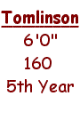
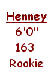

|
He's been called a one-hit wonder, a wuss, a little girl, and much more, but one thing there is no disputing is that Ryan Tomlinson is a winner. Entering his 5th Cork Bowl, Tomlinson has a 3-1 record in his four previous games. "I've been fortunate to have good players on my teams," remarked Tomlinson. A "Trent Dilfer-like" performer,
Tomlinson has simply done what his team has asked him  With the Cork Brothers on his team, R.T. will look to exploit any man-to-man coverage. "If I'm in a one-on-one matchup all day, there is no doubt that I'll beat it," added Tomlinson. "But really all I want to do is tear Greg (Howard) limb-from-limb!" With Steve Sanders at quarterback, it will be interesting to see how much he will depend on his more proven receivers before looking for Tomlinson - the 8th leading receiver in Cork Bowl history. "I think I will be much more of a factor as the game goes on and that the Colonel will look for me to make some plays in the second half," concluded Tomlinson. Game Plan - "If you can't see my mirrors, I can't see you." |
Each year it seems the pressure of being a Cork Bowl rookie is too much to bear. Last year Steve Sanders put up good numbers, but fumbled twice which led to his team being in a hole too deep to get out of. In '99, Josh Helton was a non-factor and Justin Massey and Chris Thurman have both left Corklestick with sour tastes in their mouths. It's Jeff Henney's turn to try to turn that around. Henney, a roommate of Chris Cork and S  Known more for his basketball skills, Henney is undoubtedly a sleeper in this year's game. At 25, he must perform now. Look for him to stay out of the spotlight early and to start making plays in the 3rd and 4th quarters if Willy Truitt has enough confidence to look for him. If Greg Howard struggles at all, it is vital that Henney step up to give his team a chance. Game Plan - "Low expectations = High satisfaction" |